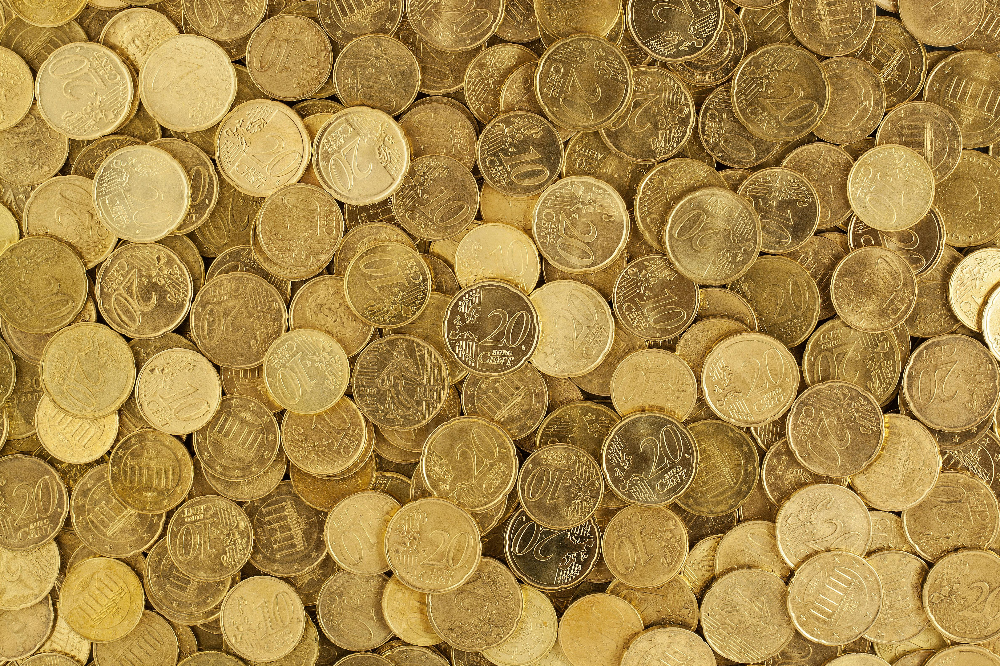
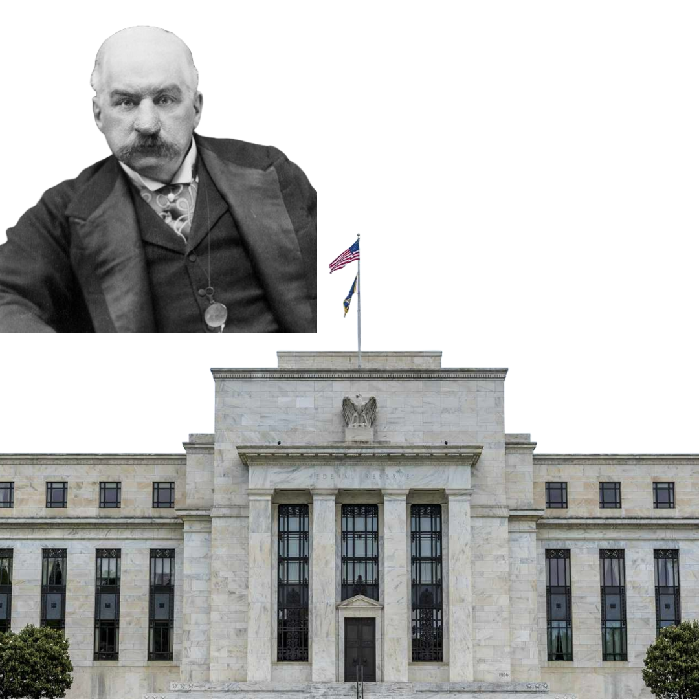

This is part one of a multi-part series about central banking. This post will look into what central banking is and how it began. From there we will look into the levels and components of central banking, the effects of central banking and its future.
What are central banks?
Banks have been around for a long time and are an essential staple of any economy, but how does our modern economy run and what types of banks do we use? The global economy is run by central banks, defined as “a national bank that provides financial and banking services for its country's government and commercial banking system, as well as implementing the government's monetary policy and issuing currency.” Yet there is a more important aspect of central banking. Central banks act as banks for other banks, with the purpose of maintaining a “Goldilocks economy” which is neither too hot nor too cold. They do this by controlling the supply of money in the economy and holding other forms of value, like gold, in the treasury. This supply of money is controlled by their authority over interest rates and is furthered by their ability to implement monetary policies, employment policies, and so on. One of their most significant powers is their control over interest, with the ability to pump money into the economy to reduce interest rates, called quantitative easing.
Where did central banks come from?
Central banking was a necessary point in our financial evolution, and the first notable part of this story begins in southern Europe during the thirteenth and fourteenth centuries. At this time money was represented as coins, made of precious metals like gold or silver, and transactions were run by private banking intermediaries such as the Bardi family in fourteenth century Florence.Yet there was a problem with this financial system because these private intermediaries were set up as independent businesses. Hence if one of these major businesses were to collapse, it would become a significant disruption to the economy. Because of this, banks were created in Southern Europe such as the Casa di san Giorgio, in this case with the purpose of managing public debt. As these began to gain traction, more advanced and influential banks were formed throughout Europe. One of the biggest advancements here was the Amsterdamsche Wisselbank, a city bank in Amsterdam carrying many qualities of a modern central bank. This was an exchange bank allowing deposits of money and public transactions. Furthermore, it gained trust and authority leading to a vast treasury and making it a mostly reliable bank able to manage credit. The features and workings of the Amsterdamsch Wisselbank were soon taken to Sweden, where the first central bank was founded. The Sveriges Riksbank was founded as the national bank of Sweden in 1668, heavily based on the Amsterdamsche Wisselbank. This had sizable success and influence, inspiring central banks to be formed in nearby regions from England to France. This then spread to continental Europe and soon to America.

During the nineteenth century, America was in a state of rampant and great economic instability, suffering frequent depressions. America had a decentralised and fairly disorganised economy where all financial business was conducted with local banks. Yet these banks were consistently collapsing into bankruptcy due to the worried nature of the common American citizen. Upon any hearsay of insolvency within their banks, citizens would not stop to think before taking out all of their money and sending the bank into collapse. Beginning in the east coast of the US, the Panic of 1907 was one of the greatest times of this economic instability. Hence it became necessary for a solution and JP Morgan set about to make this a reality. He and his fellow bankers proposed the Federal Reserve, which was agreed upon by Congress in 1913. After much debate and disagreement, the Federal Reserve was set up. It was a central bank in the form of a nexus of 12 regional banks looked after by their own individual governors. This central bank also had its own stock, unable to be bought or traded. Nonetheless, this stock would yield a 6% dividend to go toward the 12 regional banks, with any bonuses going directly to the US Treasury. This central bank and the Federal Reserve would end up, after World War 2, coming to lead the global economy. It would be the world’s dominant reserve currency and lead the world in building its own monetary system.

How does this create its own monetary system?
Central banks act as banks for other banks, and these other banks are banks for the public, corporations and citizens. So central banks establish a unified currency system for all banks to operate on, and is then adopted for financial activities and holdings. Consequently, citizens and corporations use the same currency for their financial activities. This typically leads to a fiat currency being made specific to the central bank. Historically these may have had something their value was compared to, such as the gold standard, which would give it value outside of the bank’s jurisdiction. Yet in 1971, when President Nixon renounced the gold standard, this changed. With America as the global economic superpower and their dollar as the reserve currency of the world, we had a global shift to complete fiat currency, fully detached from any physical commodity.